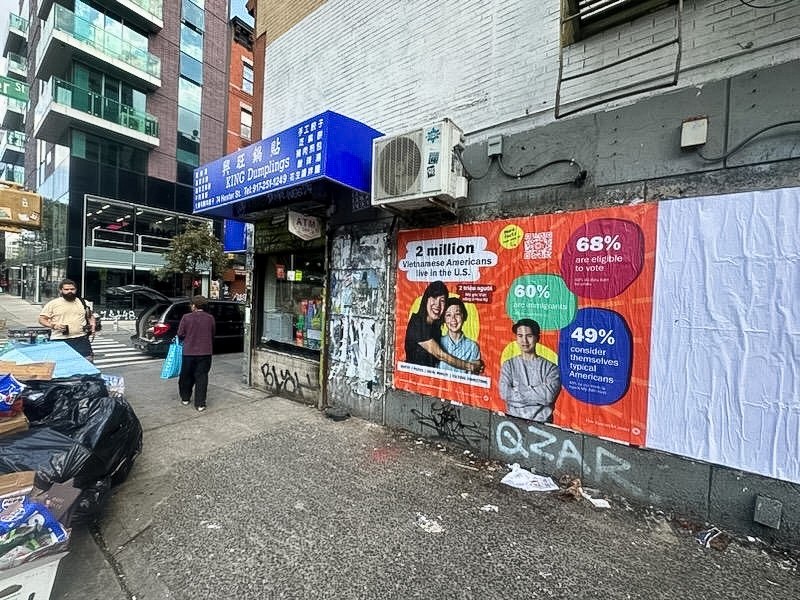

Advertising Campaign
This campaign ran in NYC and LA in fall 2024, and highlighted Pew Research Center's Asian American research portfolio. I worked closely with research and communications colleagues, as well external vendors, on the photography, design and messaging of these posters. We created individual posters for the six largest Asian American ethnic origin groups in English, as well as translated versions. QR codes directed readers back to "fact sheets" on our website.
